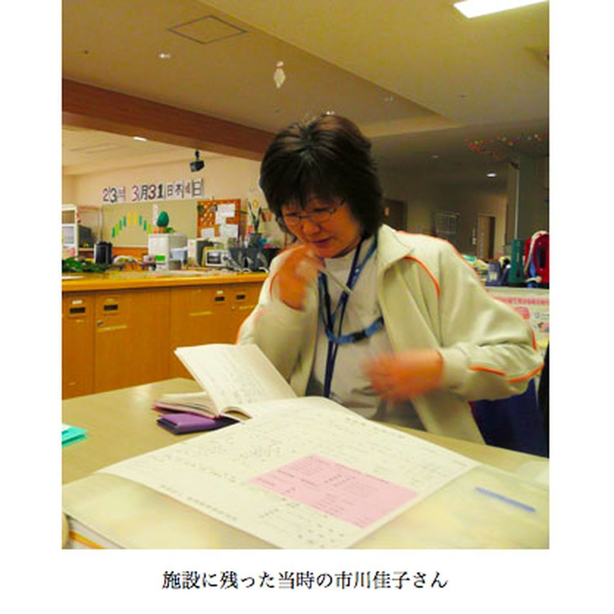
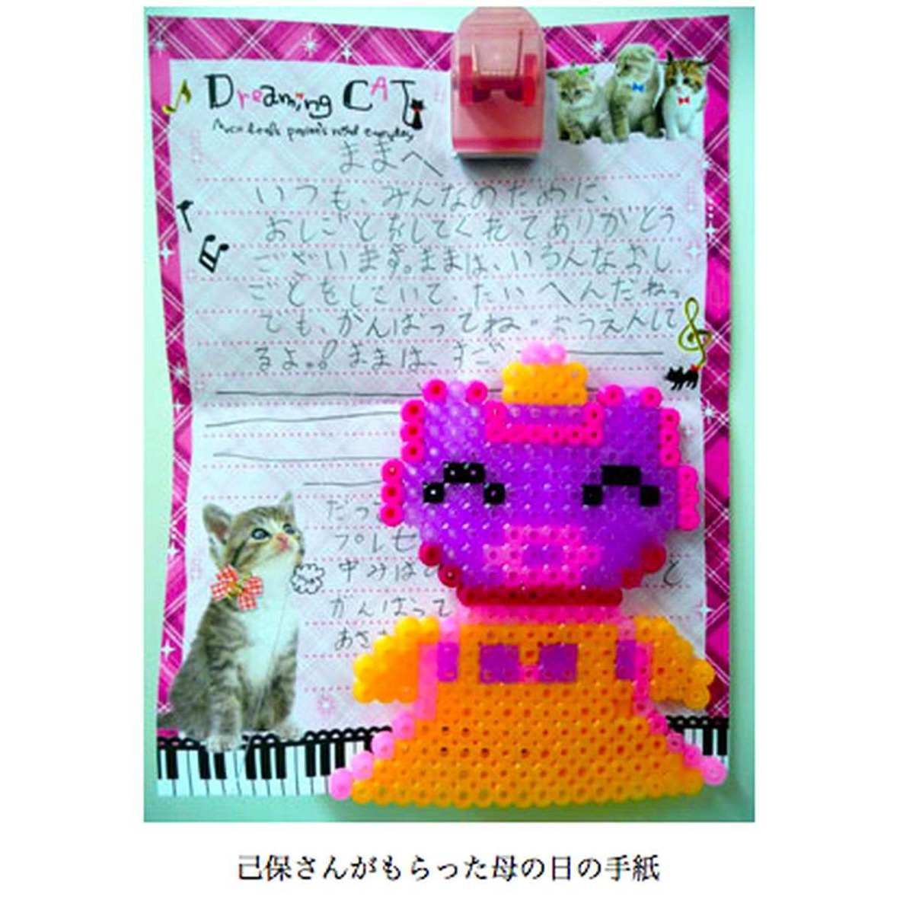

| プロメテウスの罠〔１３〕 病院、奮戦す「明日も乗り切ろう」 (朝日新聞デジタルＳＥＬＥＣＴ) | |
| 朝日新聞 | |
| (2013) | |
福島第１原発が爆発した。放射性物質が拡散していた。原発に近い病院の関係者は避難した。だが、残った医師や看護師、介護職員らもいた。それは、どうしてなのか。他方、日を追うごとに経営や人繰りが厳しくなり、県外に流出する医療スタッフも増えた。制度にしばられ、医療提供できない民間病院もあった......。原発事故がもたらした医療現場の実態にスポットをあて、そこでのギリギリの日々を、多くの関係者の証言をもとに検証する。
内容紹介
福島第１原発が爆発した。放射性物質が拡散していた。原発に近い病院の関係者は避難した。だが、残った医師や看護師、介護職員らもいた。それは、どうしてなのか。他方、日を追うごとに経営や人繰りが厳しくなり、県外に流出する医療スタッフも増えた。制度にしばられ、医療提供できない民間病院もあった......。原発事故がもたらした医療現場の実態にスポットをあて、そこでのギリギリの日々を、多くの関係者の証言をもとに検証する。
初出
朝日新聞 二〇一二年六月九日～七月六日
第１章 今日が乗り切れても
第２章 制度に殺される
第３章 立てこもる覚悟
第４章 まずは水と食料だ
第５章 えっ？爆発した？
第６章 私たちは残ります
第７章 どの程度危険なの？
第８章 信頼されているから
第９章 最後のサイレン
第１０章 患者がもたない...
第１１章 調整役がいない
第１２章 そっとしておいて
第１３章 見ないと分からない
第１４章 ３０キロ圏「応援出せぬ」
第１５章 個別に対策打たねば
第１６章 つなぎとめる手は
第１７章 タテ割りを超えて
第１８章 ええーっ、福島あ？
第１９章 入院再開は難しい
第２０章 月１０万円の重さ
第２１章 町・県・国、ばらばら
第２２章 大臣室でのがっかり
第２３章 最低ライン守る選択
第２４章 避難バス認められず
第２５章 「仕方ないです」って
第２６章 いま何かあったら
第２７章 まま、すご――い
福島県広野町の高野病院。６５床の内科病棟と、５３床の精神科病棟を持つ。福島第一原発の事故後も、３０キロ圏内で「避難せず、入院医療を続けた」唯一の民間病院だ。
２０１２年４月２７日午前８時半すぎ、事務長の高野己保（たかのみお）（４５）の部屋に、６０歳代の男性看護師が入ってきて「やめさせてほしい」といった。
「町がまったく変わらない様子に閉塞（へいそく）感を感じるんです。夜も眠れない。もう仕事が続けられません」
男性は、病院のホームページを見て山梨県から応募。１２年４月１日に仕事を始めたばかりだった。
高野は、連休に帰郷して少し休んだらどうか、と勧めた。
「いや、戻らないといけないと思うと気持ちが落ち着かないから」
男性は１２年４月３０日に退職した。
その１週間前にも、准看護師がやめている。「会津に避難している母親が病気になり、看病が必要なので」という。避難者の多くは家族が離散し、苦労している。退職を認めざるをえなかった。
１１年の大震災まで、常勤医師２人、看護師９人、准看護師２４人、介護職員２４人がいた。それがいま、常勤医師１人、看護師３人、准看護師１３人、介護職員１８人。
元職員を口説いて呼び戻し、新規採用しても震災前のレベルにはほど遠い。委託していた給食と清掃は、自前のスタッフを探した。
己保は、父親で院長の高野英男（７７）からマネジメントの一切を任されている。
町の人口は震災前は約５５００人だった。いまは３４０人。原発事故前の１割にも満たない。
政府は１１年９月３０日、広野町など原発２０～３０キロ圏の緊急時避難準備区域を解除した。南隣のいわき市に避難していた町役場は１２年３月１日に戻り、事務を再開した。
高野病院は高度な医療はしていないが、高齢者が入院する内科は常に満床状態だ。埼玉県へ避難していた精神科の患者も、１２年４月２３日に１９人が戻った。
「朝起きるといつも、今日が乗り切れるかな、と思います。今日が乗り切れても、ではその後が続くか」
１２年４月から県が２人の看護師を派遣してくれている。しかし己保は、毎週のように求人で県内外を飛び回らなければならない。
１２年４月９日午後２時。高野病院の事務長、高野己保（みお）は、福島市のホテルで、原発に近い２１病院の事務長らによる会議に出席していた。
東電原発事故被災病院協議会。補償などを相談するため、１１年５月から１～２カ月に１回開かれている。
この日は、双葉郡の病院で唯一開いている高野病院や、警戒区域内にあって医療提供ができない他の民間病院の現状が議題だった。
来賓の福島県や厚生労働省の担当者、国会議員らが向かい合う。
警戒区域内にある富岡町の今村病院事務局長、石澤弘幸（いしざわひろゆき）（５５）が発言した。警戒区域は原発２０キロ圏で、石澤の病院は休止中だ。
「東京電力の賠償金を担保に、県や国から資金を貸し付けてもらう方法はないのでしょうか」
原発事故から１年がたち、金融機関や取引先企業から、借入金の返済や未払い金の督促が舞い込むようになった。社会保険料の免除の期限切れなどを理由に、残っていた７２人の職員を仕方なく１１年１月末に解雇した。退職金の支払いと金融機関から借入金の早期返済を求められ、資金繰りが厳しいのだ。
県地域医療課の担当者が答えた。
「県の貸付制度は住民への医療提供が前提です。再開のめどが立たないと難しい」
警戒区域内の民間病院でつくる「私的４病院の会」代表、小高赤坂病院長の渡辺瑞也（わたなべみずや）（６９）が立った。
「原発のせいで診療ができないのですよ。私たちには落ち度がないのです。見殺しってことですか。制度を変えるってことを考えてくれないのですか。前例のない状況で、なぜ制度を変えてくれないのですか」
広野町は警戒区域の外だが、避難で無人となった地域の再生のテストケースとなる。
己保も訴えた。
「本当に悔しくて。職員が確保できないので、病院を継続しようとしても施設基準の壁に阻まれる。制度に殺されるんですね」
「スタッフから、双葉郡は復興から置いておかれるのかという不安がでているんです」
施設基準には看護師や医師の数が定められており、診療報酬にも影響する。東電からの補償で経営を維持しても、職員確保ができなければ入院医療は続けられない。
１１年３月１１日の大震災。高野病院は２５メートルの高台にあり、津波は免れた。しかし、己保がほっとしたのはそのときだけだった。
広野町の高野病院は、原発から２２キロにある。２０～３０キロ圏にある他の病院は避難を選んだ。高野病院はなぜ避難しなかったのか。
事務長の高野己保（みお）は「最初は、原発のことはまったく頭の中にありませんでした」という。
１１年３月１１日午後２時４６分。鉄筋コンクリート２階建ての病院が大きく揺れた。医薬品の大きな棚が倒れた。病院裏手にあるボイラーの緊急停止を知らせる警報音がけたたましく鳴っている。
入院患者は震災発生時、内科病棟に６３人、精神科病棟に４４人。
１階ナースステーションの隣にある１００号室では、胸の大静脈からカテーテルで栄養補給する重症患者４人がいた。統括看護師の松本とし子（６３）はカテーテルが抜けるのを防ぐため、スタンドにぶら下がっていた輸液バッグを外して次々とベッドの上に投げていった。
うろたえる看護師らに、「早く病室に入って！」と指示した。
院長の高野英男は、医局でカルテを書いていたが、イスが揺れでどんどん机から離れていく。
しかし、この時はまだ「大きな地震」という認識しかなかった。
事務部の菅野明（５２）は、ボイラーの警報音を止めに走った。ロビーに戻ると、テレビで大津波警報が流れている。「３メートル？ それなら病院は大丈夫だろう」。海抜２５メートルにある安心感があった。
そこに、津波がやって来た。
病院は太平洋を望む丘の上にある。海面がせり上がって押し寄せてくる――。１０メートルはゆうにあった。
菅野は第１波の後、道路の状態を見に坂を下りた。
川沿いの道路は陥没し、海側の道路は倒木でふさがれていた。このままでは孤立してしまう。
チェーンソーを持ち出して倒木を切っていると第２波が来た。家の屋根が流れてきて、またふさがれてしまった。
院内では自家発電が作動し、最低限の医療は確保できた。しかし停電でテレビや固定電話は使えず、携帯電話はつながらない。情報がない。
己保は「当分、立てこもることになる」と覚悟する。厨房（ちゅうぼう）の職員に「お握りつくって」と頼んだ。
子どもがいる職員には「歩いて帰るなら今しかないよ」と声をかけた。家族の安全を確認できたら戻って来てくれるだろう。
この段階でも、認識はまだ「地震と津波だけ」だった。
がれきや倒木で道路がふさがれ、停電し、携帯も通じない。
１１年３月１１日の高野病院では、入院患者の携帯ラジオが情報源となった。
事務長の高野己保（みお）は、夜中、事務室で泊まり込みの職員と一緒にラジオを囲んだ。三陸の安否情報が繰り返し流れ、原発周辺地域の身近な情報が少なくいら立たしさもあった。
深夜になって、入院中の６０歳代の妻を心配した夫が訪ねてきた。町内の自宅から歩いてきたという。孤立感に襲われていた事務長の己保は、少し勇気づけられた。
１１年３月１２日朝、菅野明ら事務部の男性職員が、総出で道路づくりをした。病院裏の、通称「浜街道」という建設中の道路に、病院から道をつけようというのだ。道路がなければ食料の買い出しもできない。
土嚢（どのう）を積み、段差をならす。やっと車が外に出られるようになった。
午後、己保は菅野が運転する車で食材の買い出しに出た。国道６号で原発方向にある楢葉町のスーパーに向かう。
途中、系列法人の特別養護老人ホームでヘルパーをしていた元職員の車とすれ違った。元職員は菅野に声をかけた。
「原発から逃げろ。南か西！」
「どうしたんだ」
「楢葉町にはだれもいない。みんな避難するんだ！」
車のラジオをつけると、原発の異常事態を報じていた。己保が「原発事故が起きているかもしれない」と認識した最初の瞬間だった。
それでも己保は、すぐ避難しなければとは思いつかなかった。
「まずは患者の命をどうつなぐか。食料と水を確保しなければ。そればかり考えていました」
いわき市に向かった。
南行きの国道６号は海岸線を通る。津波被害で使えないと思い、内陸の県道３５号に迂回（うかい）した。県道は避難者で大渋滞を起こしていた。３０～４０分でいわき市の中心街に行けるところが、２時間半かかった。
サバのみそ煮、小豆の缶詰、つくだ煮、のり、スープ、おいなりさんの素、レトルトご飯、あらゆるインスタント食品。
カートに山盛りで食品を積み込んだ。ミネラルウオーターはすでに売り切れで、代わりにポカリスエット１箱を買った。
病院に戻る途中、己保の携帯に病院からメールが入った。
「事務長大変です。すぐ連絡下さい」
１１年３月１２日午後、買い出しに出た高野己保（みお）が病院に戻ると、携帯メールの「大変です」の意味が分かった。
２階建ての病院の屋上にある貯水タンクの水がなくなっていた。
病院の地下には４０トンの貯水槽がある。その水を電気で屋上のタンクにくみ上げ、そこから給水する仕組みだ。
それが停電で止まった。
飲み水、手洗いやトイレ、入浴の水だけではない。すべての水をそれに頼っている。当面の食料は確保したものの、これでは調理ができない。
職員が地下タンクの水をバケツリレーした。それは翌１３日、消防が給水に来てくれるまで続いた。
１１年３月１２日午後３時３６分、福島第一原発１号機で爆発が起きた。事務室に置かれた携帯ラジオが、そのニュースを伝えた。
「えっ？ 爆発した？」
看護部統括の松本とし子は耳を疑った。そこでやっと、「原発はそんなすごいことになっているんだ」と思った。
爆発の約３時間後、政府は半径２０キロ圏内からの避難を指示した。病院がある広野町は２０～３０キロ圏。この少し前、政府は福島第二原発から半径１０キロ圏内にも避難指示を出していたが、病院は１１キロだった。
１１年３月１２日夕、パトカーで警官がやってきた。警官は１枚のメモを己保に渡した。電話番号が記されている。警官は「県医療チームが院長先生と話がしたいそうです」と告げた。
院長の高野英男の代わりに己保が電話した。県災害対策本部の職員が出た。入院患者数や職員数、ライフラインの状況を尋ねられた。そして「避難されますか？」といわれた。
己保は「食料もあるし、私たちは避難しません」と答えた。
「私たちにとって、その時点では、水や食料、停電、人手の問題で頭がいっぱいでした。ラジオからの情報も限られていました」
己保は、当直室にいた英男に、県災害対策本部との電話内容などを報告した。英男はこういった。
「病院はコンクリートで、放射線は遮蔽（しゃへい）される。しかも南からの強い風が吹いている。病院は第一原発の真南にあるから大丈夫だ。距離もある」
病院を取り巻く状況が変わったのは１１年３月１３日、広野町役場が、政府の「屋内退避」を飛び越え、町独自の判断で全住民への避難を呼びかけ始めたからだ。
高野病院が「避難せず」を決めた翌３月１３日、広野町役場が「全住民避難」の指示を出した。町独自の判断だった。
県災害対策本部などから電話がかかってきた。院長の高野英男が出た。そのやりとりを隣で統括看護師の松本とし子が聞いている。避難を求める電話に、英男がこういっているのが聞こえた。
「いや、私１人でも残る」
「移せない患者が多くいる」
その時点で内科で６３人、精神科で３８人、合わせて１００人を超す入院患者がいた。
英男は電話口で宣言した。
「医療は続ける。医師免許を返上しても構わない」
松本が声をかけた。
「私も残ります」
不安はあった。しかし院長１人では輸液の交換さえ困るだろう。他の看護師ら職員数人も「残ります」といった。
１１年３月１３日夕、パトカーが病院にやってきた。事務長の高野己保（みお）が玄関口で対応した。降りてきた警官が強い口調でこういった。
「何でここにいるんだ！」
「何で避難しないんだ！」
「避難指示が出てるんだ！」
矢継ぎ早に避難を迫る。己保は答えた。
「こちらの判断で避難しないことにしました。県には認めてもらっています」
しかし理解してもらえない。仕方なく、警官の前で県災害対策本部に改めて電話し、「町は避難指示を出しているけど、私たちは残ります」と伝えた。
己保は振り返っていう。
「原発事故に、私たちはのんき過ぎたのかもしれませんね」
水は、町役場が避難した後も、自衛隊が毎日やってきて給水してくれた。己保の仕事部屋には、給水に来てくれた自衛隊員の記念写真が飾られているほどだ。
隣の楢葉町のスーパーは、裏口のかぎを預けてくれた。
近くのガソリンスタンドは閉鎖していたが、店長が小型タンクローリーのかぎを渡していった。おかげで軽油が補給でき、自家発電が続けられた。
町は、放射線測定器や発電機、投光器などを貸してくれた。
原発から２２キロの病院。動かせない患者をかかえ、入ってくる情報は限られている。それでも何とか運営を続けていった。
１１年３月１３日の時点で、政府が避難指示を出した原発２０キロ圏以外の広野町などでも、自主避難の呼びかけが始まっていた。
避難を求めて来たパトカーに、事務長の高野己保（みお）は、病院は避難しない旨を説明した。
警官と己保のやりとりを聞いていた統括看護師の松本とし子は、切迫した感じを持ったものの、この状態での避難は現実的ではないと感じていた。
「一方的にすぐ避難しろっていっていたけど、寝たきりの患者さんたちを、どうやればすぐ避難させられるんでしょうか」
夜遅くになって、老夫婦を乗せたパトカーが病院にやってきた。
「この人たちを預かってくれませんか」
楢葉町の住民だという。
「病気ですか」
応対に出た己保が尋ねた。
「避難していなかった人がいたんで連れてきた。足が悪いんです」
しかし看護師が車いすを持って来る前に、夫婦はロビーのソファまで自分で歩いていた。
己保は受け入れを断った。
「私たちも食料、水がぎりぎりなんです。申し訳ないですけど、ご自身で歩けるなら、そちらで避難所に連れて行ってくれませんか」
警官はこう頼んできたという。
「あなたたちもすぐ避難するんでしょう。だったら一緒に連れて行ってくれませんか」
警官は、高野病院が避難しない決断をしていたことを知らなかった。そもそも、避難しないという判断自体が、当時の状況下ではなかなか理解してもらえなかった。
深夜になってから、老夫婦の件で別の警官がやってきた。
「この人たちをいわき市内の避難所まで送ってくれないか」
近くで聞いていた事務部の男性が立ち上がった。
「私が送りましょうか」
楢葉町の老夫婦を車に乗せ、いわき市に向かった。同じ地区住民がいる避難所を探し、夫婦を降ろして、病院に戻ってきたのは午前２時近くだった。
己保や職員は町内で多くの自衛隊員や警官たちを見かけた。彼らは、防護服やガスマスクの人もいれば、普通の制服の人もいた。
「テレビはつかないし、ラジオは安否情報ばかり。町がどの程度危険な状態か、私たちにはまったく分からなかった」
広野町・高野病院院長の高野英男は１１年３月１３日以降、町災害対策本部から借りた放射線測定器を使って、病院内外の放射線量を測って回った。
「不安がある人は計測するから申し出てほしい」
英男は、患者の食事を作る委託業者の職員を含め、院内に残っている人に声をかけた。
「放射線がどの程度高いか。職員の不安が目に見えて分かりましたから」
正確な記録は残っていないが、事務長の高野己保（みお）のメモには「２マイクロシーベルト」と書いてある。屋内か屋外かは分からないが、とにかく放射線の数値には気を使っていた。
残ることを決めていた統括看護師の松本とし子は、こう考えた。
「私は患者さんから給料をもらっている。ご家族から信頼されて患者さんを預かっているのだから」
他の職員にも残ってほしいと願うと同時に「原発は大丈夫だろうか」という心配もあった。
一方、病院に患者を預けている家族はどう思っていたか。
農村部に住む町議の門馬巧（６８）は、母親の房子（当時８９）が入院していた。
門馬は最初、福島市内の娘の家に避難し、１１年４月９日から８月末まで石川町の二次避難所の旅館に移っていた。９月からは門馬夫婦だけ、自宅に戻る。子どもや孫たちは、今もいわき市に避難したままだ。
避難中、時間を見つけては高野病院の母親を見舞いに行った。１週間か１０日に１回のペースだった。
母は１１年５月１日に病院で亡くなった。
もし病院が避難していたら、母はそのとき命を落としていたかもしれないと門馬は思う。
「はっきりいわせてもらえば、高齢化や共働きが多いこの地域で、高野病院は必要なんです」
遺体が病院を出るとき、門馬は母親を最期まで看護してくれた病院職員らの手を握り、涙を流した。
８７歳の母親が入院していた６０歳代の女性は１１年３月１３日朝、自主避難していたいわき市の親類宅から車で広野町に戻った。
「原発の危険より、母を置いてきたという気持ちの方が、私にとってつらかった」
しかし町にはだれもいない。
「動けない母を連れて、どこに行けばいいのか」
母親をみるために、一緒にこの町に残ろうと決めた。
１１年３月１５日、広野町の防災無線のサイレンが鳴った。いつもよりずっと長かった。
「これをもって、広野町役場は小野町にいきます」
避難を知らせる最後のサイレンと放送だった。３月１４日に３号機、１５日に４号機の建屋が爆発していた。
事務部の菅野明は、友人の町職員に電話で尋ねた。
「町は病院をどうするんだ」
しかし、明確な答えはなかった。
統括看護師の松本とし子は、サイレン後の院内の様子を「見捨てられた感、でしたね」という。
町災害対策本部は、大型給水車１台、灯油、ガソリンなどを残していってくれた。
しかし、これで役場も人も、だれもいなくなってしまうんだ――。
事務長の高野己保（みお）は「最後のサイレン」のとき、いわき市に買い出しに行っていて留守だった。病院に戻って玄関を入るなり、何か変だと感じた。
ロビーに看護師らがいた。泣いている職員もいる。１人が「うちが心配だから帰っていいですか」と尋ねた。もちろんいいよ、と答えた。
給食づくりは外部業者に委託している。調理員らも、１５日夕食のご飯の下準備をして避難していった。
松本と残った職員が厨房（ちゅうぼう）に向かった。１００人分の準備が始まった。
みそ汁をつくる。大鍋にお玉でみそを２、３杯入れてみたが、ちっとも味がしない。めんつゆを入れてワカメの吸い物にした。あとはおかゆとお握りが精いっぱいだった。
１１年３月１３日、入院している８７歳の母が心配で避難先から自宅に戻った女性も、最後のサイレンで不安を覚え、３月１５日夜、病院に現れた。
「私をここにいさせてもらえませんか。なんでもしますから」
己保や松本は内心、「助かった」と思った。女性は１１年３月１６日朝から厨房に入った。それは６月まで続いた。
菅野は、いわき市に避難させた母（７６）、妻（５２）、長女（２６）を呼び戻した。１１年３月１７日から、母と妻は厨房に、長女は患者の介助に入った。
１日１～２食になる病院もある中、高野病院は１日３食を続けた。
内科病棟の看護師らは、仮眠もなかなか取れないほど人手不足だった。階段の上り下りで足はパンパンに腫れ、靴がはけなくなった。
松本は、患者を診る医師の横で、「気づくと点滴スタンドを握ってうとうとしていました」という。限界が近づいていた。
広野町の高野病院では、１１年３月１５日の「最後のサイレン」の後、職員が激減した。
内科病棟の患者６３人に対し、看護師と准看護師が４人と介護職員２人。精神科病棟は患者３７人に対し、看護師と准看護師が５人と介護職員２人にまで減った。
疲労はピークに達していた。
「精神科を避難させましょう」
１１年３月１５日午後、事務長の高野己保（みお）が院長の高野英男にいった。
精神科病棟には、まだ移動に耐えられる患者がいる。その人たちを、いわき市内の病院に避難させる。残った職員で内科病棟の高齢患者を支えよう――。
高野病院は、いわき市病院協議会のメンバーだった。患者の受け入れを頼めるかもしれないと考えた。
知り合いの２カ所の病院に電話した。しかし、甘かった。
一つの病院は３人を受け入れてくれたが、それ以上は無理だった。いわき市も、放射能を懸念し、県境を越えて物資が入ってこなかった。水も断水で不足していた。
１１年３月１５日夜、己保がロビーに出てきてストーブにあたった。事務部の菅野明が声をかけた。
「あと何日もつと思う？」
「正直、あと２日だと思う」
「俺もそう思う」
己保は、病院全体の避難をしようと決意した。
パーカとスエットを着た己保は、屋上に出た。みぞれだった。高さ２メートル以上ある貯水槽の上に、パイプに足をかけてよじ登った。
県職員とは時々電話が通じていたが、プツプツ切れてしまう。暗闇の中、電波を探しながら、東京都内の大学病院の医師にメールを打った。高野病院の非常勤医だ。
「自分たちの努力ではどうにもなりません。自衛隊の派遣をお願いできませんか」
同僚の医師から返信があった。
「こちらでも動いているから、もう少しがんばって」
大学病院から政府に連絡が行ったらしく、県災害対策本部から、己保の携帯にメールがきた。
「今、何が必要か」
「水、燃料、人」と返信した。
連続運転で異常音が出ていた自家発電も心配だった。
県災対本部はこのころ、「まず避難は考えられないか」といってきた。避難先を尋ねると、「体育館」だった。それじゃだめなんです、患者がもたない......。
広野町の高野病院は１１年３月１５日以降、避難をめぐって揺れた。
精神科の入院患者は自分で動ける人が多い。しかし内科病棟は、バスなどでは移動させることのできない高齢者が多数だ。
「内科の重症者は高齢だし、動かせない。残る」
院長の高野英男は言いはった。
一時的にせよ、「体育館」への避難は論外だと考えていた。まだストーブが欠かせない寒さだ。ベッドもない体育館で体調を維持していくのはとても無理だ。
「みすみす患者を死なせるわけにはいかない。医師免許をかけても譲れない」
しかし事務長の高野己保（みお）の意見はちょっと違った。「このままではもたない。結局、誰かが命を落とす。全員避難しましょう」
己保らの説得で、英男は「分かった」と口にした。
己保はすぐ避難の準備を始めた。手提げ金庫や患者台帳を、いつでも出発できるよう車に積み込んだ。
しかし、体育館でないとするとどこに避難するのか。
１１年３月１６日朝、患者に食事を出し終わると、己保は県災害対策本部などとの交渉に入った。
３月１６日夕、東北電力が送電線を引き込み、電気が使えるようになった。震災の３月１１日以来、初のうれしい復旧だった。
しかし、電話やファクスは使えない。県災対本部との交渉は難航した。内科病棟の患者の扱いだった。
「全員搬送なら３０分以内の病院。ストレッチャーで搬送」
英男はこう条件を付けていた。しかしとても無理だった。それならばと、英男は１時間以内ならバスでの移動が可能な患者２２人を選んだ。
残ったのはカテーテルで中心静脈栄養をしたり、頻繁にたんの吸引をしたりする重症の高齢患者だった。
しかし、己保が厚生労働省の担当者に問い合わせると、全員退避を求められた。いわき市立総合磐城共立病院でトリアージ（搬送先選び）をし、県外に避難させる準備をしていると伝えられた。
己保の手書きのメモには、こう記されている。
「国は全員退ヒ強制 主旨（しゅし）はいざというときのためにはやめはやめに。重症者もトリアージするから大丈夫。何かあったらＤｒ（ドクター）もナースもにげるでしょ......と言われた」
指示はあっても、病院に来て調整する人はいなかった。
高野病院の高野己保（みお）に１１年３月１７日、県障がい福祉課から連絡が入った。
「１９日に迎えに行く。それまでがんばってくれ」
精神科の患者の移動が決まった。
続いて、移動可能な内科患者の避難が１１年３月２１日に決まった。
３月１７日昼、己保の夫で医師の博文（４３）が、勤務先の埼玉県から駆けつけた。博文は車を持たなかったが、わざわざ中古車を買った。
己保が頼んだ携帯電話を２台持ってきた。つながりやすい機種だ。
事務部の菅野明の家族や患者の家族が厨房（ちゅうぼう）を手伝ってくれることで、己保は県などとの連絡に専念できるようになった。
患者避難が始まる前日の１１年３月１８日、統括看護師の松本とし子は、厨房の大鍋でお湯を沸かした。送り出す患者の体をタオルでふき、着替えをするためだった。
３月１９日、精神科病棟の患者が避難した。精神科の看護師らが内科病棟に移ってきた。やっと余裕が生まれ、休養が取れるようになった。
３月２１日、内科病棟の一部患者がバスで避難していった。途中で病状が悪化した患者はいなかった。
病院には、高齢の重症患者３７人とスタッフ１６人が残った。
避難を巡る連絡は、己保１人に対し、連絡相手はどんどん増えた。
まず県災害対策本部。
精神科は県障がい福祉課。
内科は県高齢福祉課。
厚生労働省の担当者。
患者の受け入れ先自治体や病院からの問い合わせ......。
己保の携帯では、メールに添付された患者リストの記入用紙などは開けなかった。
１１年３月２０日、インターネット回線が回復する。家族からの安否確認や支援の申し出のメールが殺到していた。
己保はひとつひとつに返信した。
「長時間の搬送に耐えられないと院長が判断したため、継続治療をさせていただいています」
「放射線は毎日測定を行っています。基準値以下ですのでご心配なさらないで下さい」――
このころ、ネットで高野病院が話題になっていたことを知った。
「高齢の患者ら１００人孤立」
「避難命令なのに、避難しない病院がある」
己保は１１年３月２７日、ブログを更新した。
「私たちは、ひっそりと、淡々と、毎日の責務を果たしているだけで、できればそっとしておいてください」
広野町は１１年３月下旬、映画のセットのような町になっていた。駅前の通りを歩いても、人影すらない。
「何もかもが止まっている印象でした」
事務長の高野己保（みお）は振り返る。
病院は落ち着きを取り戻した。
このころ、己保や統括看護師の松本とし子ら残った看護師が傷ついていたことがある。
避難でやりとりした行政関係者やマスコミが、病院に残った患者を死期が迫ったときの患者を指す「看取（みと）りの患者」と表現していたことだ。
「私たちは医療を提供しているんです。看取りのときを、待っているのではありません」
己保がそのことをいくら説明しても、行政関係者には理解されなかった。もともと内科病棟の患者の平均在院日数は４００日前後。それでも、無理な搬送をすると、命の危険がある患者が多かったのだ。
そんな時期、福島県立医大准教授の福島俊彦（４８）は、高野病院を訪れることにした。
福島は１１年３月１４日から県災害対策本部に詰め、高野病院などの広域搬送の調整をしていた。一段落したとき、現地に行ってみたくなった。福島は外科医で、高野病院とはこれまで縁がなかった。
１１年３月２８日、連絡なしで病院を訪ねた。病院の建物に大きな被害はなかった。医薬品会社の車も来ていた。
「被災して壊れた病院だと想像していました。行ってみたら、水が出ないことを除いて普通だった。びっくりしました」
院長の高野英男が院内を案内した。患者一人ひとりの状態と残した理由を説明する。医師の福島には、動かすのは難しい患者であることがよく理解できた。

その後、厚生労働省の大臣官房企画官、迫井正深（さこいまさみ）がやってきた。
厚労省災害対策本部のメンバーとして１１年４月３日、福島県入りした。県や医療関係者との調整が目的だが、高野病院を訪ねようと考えていた。
「病院で何が起きているか、電話では分からない。原発が次々爆発する中で、何か起きれば対応しなくてはいけないですから」
迫井は１１年４月５日に広野町に入った。迫井も元外科医で、病院のどこを見ればいいかは分かっていた。
院内の管理は行き届いていた。職員も落ち着いていた。床はきれいで、衛生状態に問題はなかった。
「やっぱり百聞はゼロ見。見てみないと分からない」
原発に近い病院は、次第に医療活動が難しくなっていった。
政府の避難指示は「半径２０キロ圏内」だった。高野病院は福島第一原発から２２キロだ。それ以上離れている施設でさえ、状況は厳しかった。
川俣町の介護老人保健施設「リハビリ南東北川俣」は原発から４９キロある。放射線量は福島市より低い。にもかかわらず、スタッフは、ストレスと疲労に襲われていた。
副施設長の市川佳子（４５）は１１年３月末、こう訴えた。
「放射能への不安。ガソリンがないから職員は家にも帰れない。一人になると施設の裏に行って涙を流している人もいました」
浪江町や双葉町からの避難者を含め、１７０人以上の高齢者を抱えていた。市川たち管理職の間では、こんな会話が交わされたという。
「また原発が爆発したら、どうしよう」
「上の者は残っても、若い職員は何とかしなくちゃいけないな」
２０～３０キロ圏の南相馬市や広野町は市長や町長が避難を呼びかけた。
しかし、政府は避難指示を出していない。残る人もいた。南相馬市は約１万人の住民が残った。

こうした状況に医療団体はどう対応しようとしたのだろう。
日本医師会では、副会長（現会長）の横倉義武が被災地への医療チーム派遣の調整をしていた。１１年４月８日、横倉はこう述べた。
「原発から３０キロ圏内に、医療チームは入れない」
日本看護協会は、独自に「災害支援ナース」という仕組みを持っている。研修を受けた登録看護師をボランティアとして派遣する制度だ。
１１年５月１７日に派遣は終了したが、のべ人数は岩手９６０人、宮城２３０６人、福島４０８人。福島は圧倒的に少ない。
常任理事（現専務理事）の井伊久美子は１１年４月１２日、こう説明した。
「私たちはボランティア組織。２０～３０キロ圏は、政府の屋内退避指示がかかっていた。そういうところにボランティアは出せないと判断した」
参加者が加入する保険も「放射能汚染されたものに伴う事故」は免責だった。
「大勢の看護師を入れて、何かあったときに避難をどうするのかという問題もある」
公的医療機関の独立行政法人国立病院機構や恩賜（おんし）財団済生会も、同じように、送り出す職員の安全の問題を考えていた。
２０～３０キロ圏の医療はこれからどうするのか。
１１年４月３日に福島入りした厚生労働省大臣官房企画官（保険局併任）の迫井正深は危機感を持った。
本来、その問題を担当するのは厚労省の医政局だ。しかし医政局は、首都圏の計画停電が医療に影響することへの対応に追われていた。
「県が中心になって医療を確保していかないといけない」
迫井は、厚労省からの出向で広島県福祉保健部長の経験もある。支援に入っていた放射線関係の医師や研究者をよく知っていた。現場で意見を聞き、その場で判断できる。
福島県入りしてみると、県災害対策本部は農作物の放射能への対応の問題などに追われ、手が回らない状態だった。
２０～３０キロ圏には、入院医療を続けている高野病院がある。一方で南相馬市立総合病院のように、避難しなかった１万人の住民の医療を守らなければならない病院もある。
「それぞれ個別に対策を打たないと、医療は回らなくなる」
それは現場で調整するしかない。
県災対本部にいた県立医大准教授の福島俊彦は当時、医療支援チームの状況さえなかなか把握できなかったという。
県医師会は地域医療の確保、県立医大は被曝（ひばく）医療や患者搬送先の調整にと、それぞれ別の場所で対応に追われていた。県は十分な調整役を果たせないでいた。
「情報共有の場をつくろう」
迫井は、県医師会常任理事の星北斗（４８）に声をかけた。
２人は、旧厚生省の医系技官同士。星はその後、故郷で病院理事長になっていた。
２人は一緒に福島県立医大に行き、協力を求めた。
１１年４月７日から週１回、県災対本部、県医師会、県立医大、厚労省などによる「懇談会」が始まった。
「何のためにやるんですか」
「いつまでやるんですか」
当初は、そんな冷ややかな意見も出た。医療関係者は疲れていた。
星は提案した。
休止せざるを得ない病院が、その医師や看護師を別の医療機関に一時的に「派遣」できないか――。
「応援に来てくれる医療ボランティアもいいが、早く地元の医療機関が再生していかないと、避難した医療スタッフは戻ってこない。将来、元の職場に戻れる枠組みをつくることが大切なんだ」
原発事故いらい、医師や看護師ら医療スタッフが、福島県から続々流出しはじめた。
県医師会常任理事の星北斗は、郡山市の星総合病院の理事長だ。その星病院でも、１１年４月１日に着任するはずだった初期研修医５人のうち２人が辞退を申し出た。
「震災と原発の両方の影響だった。当時の状況を考えれば仕方がない」と星はいう。
郡山市の星の病院は原発から距離で５７キロ。しかしそれでも地震のため、病棟の渡り廊下が落ち、使える病床が４８０床から１８５床に減った。影響という点では３０キロ圏内と同じような感覚があった。
「いったん県外で医療活動に就いてしまったら原発事故が収束しても帰って来にくくなる。地域の医療が回復しないと住民の帰還も難しい」
特に看護師は、避難先で新たな働き口が得やすい。つなぎとめておかなければならない。
県医師会は１１年４月１４日、病院協会、歯科医師会、薬剤師会、看護協会の連名で、佐藤雄平知事に緊急要望を出した。
合法的な「在籍出向制度」をつくってほしい――。
医療従事者が、元の医療機関に在籍したまま他の医療機関に出向できる仕組みだ。労働者派遣法では、医師や看護師の派遣はできない。
県は１１年６月６日、厚生労働省福島労働局などと調整したはずの、「労働者派遣法に在籍出向は抵触しない」との説明書きがある契約ひな型を医療機関に通知。するとすぐ、厚労省福島労働局から注文がついた。
「出向元の医療機関が復興するまで、と期間を定める」
「出向元は手数料などを出向先から徴収できない」
「違反した場合、１年以下の懲役または１００万円以下の罰金」
加えて、星や県が温度差を感じたのは、期間の問題だった。
「雇用調整助成金を受けるなら、期間は最長１年」――。
原発事故が１年で収束すると、福島労働局は考えているのだろうか。
そのころ星の病院に、県病院局や高野病院などから、「看護師を貸して欲しい」という要望が来ていた。
高野病院事務長の高野己保と協議したが、結局このときは断った。
「病棟を再開するには、２０人の看護師が必要。うちから２０人を出向させるのは無理。他の医療機関も看護師不足が深刻になっているのだから」
住民が避難した広野町は、事故前と雰囲気が一変していた。
１２年２月、駅前通りを歩いた。人通りがなく、ほとんどの店が閉まっていた。
駅近く、町で１軒のスーパーは閉店している。スーパーの駐車場には「アトックス」の看板。原発の保守管理や放射性物質除去、放射線管理をする企業だ。ドアガラスに三菱の赤いロゴが入った張り紙には「三菱重工業（株）福島第一作業所」とある。一部を、三菱重工が仮事務所にしているのだ。
すし屋の向かいにプレハブの事務所が建つ。空き地だったところは作業用車両の駐車場――。
町中が原発事故処理の前線基地になっていた。
「飯場の町になっちゃいました」
高野病院事務長の高野己保（みお）はいう。その中で、高野病院は医療を続けていた。
双葉郡の他の病院や介護施設は休止中だ。そのため高野病院には、入院を求める問い合わせが相次ぐ。
「家族の病状が避難先で悪化したので、入院できませんか」
「うちの入院患者を、そちらの病院に転院させられないか」
しかし高野病院も、看護師らの不足をかかえて満床なのだ。
震災１年の３月１１日、環境省総合環境政策局環境保健部長の佐藤敏信が病院を訪ねてきた。２日前のアポイント。急な訪問だった。
佐藤は１２年３月１日、原発相兼務の環境相の細野豪志に、大臣室で新聞記事を見せられた。警戒区域解除後の地域医療の課題が書かれていた。
「病院が困っているようじゃないか。見ておいてくれ」
佐藤は医系技官。もともと厚生労働省の職員で、医政局や保険局の課長を務めた経験がある。今は環境省に移っているが、医療人脈に通じていた。
己保との面談で窮状を聞いた佐藤は、看護師や薬剤師といった人材確保が重要だと直感する。
医療系大学幹部を紹介した。
厚労省の知人に、看護師確保の必要性など現場が抱える問題を伝えた。
医療行政は、いま環境省にいる佐藤には所管外だ。しかし中央省庁の幹部が現地の事情を知り、動くことで、高野病院のような施設が持ちこたえられるかもしれない。
「病院が続いていれば、いつの日か住民が戻ってくる」
１２年３月１７日、高野病院事務長の高野己保（みお）は、東京・青山のイベントホールにいた。
福島県主催の看護職就職フェア。日本看護協会や県看護協会に協力を求め、首都圏の看護学生や看護師を勧誘するねらいで開かれた。県内２７病院が参加した。
震災から１年が過ぎ、高野病院は精神科病棟を再開しようとしていた。看護師が必要だった。
己保は目立つように、病院名が大きく入ったＴシャツを着た。リクルート用に特注したものだ。
ポスターもつくった。青空に向かって、黄色い花が生き生きと開く。「ありがとう。あなたがいる。それだけで広野の明日は今日よりまぶしい」というコピー。１枚３千円かかった。
しかし、県が３００人の参加を見込んでいたのに対し、来場したのはたった５人だった。
高野病院のポスターに目をとめ、話を聞いてくれた看護学生は１人。それも、他のブースの病院の親戚の子だった。
１２年４月１３日、己保は今度は仙台市にある東北薬科大にいた。
薬剤師が必要で、薬学部がある全大学に手紙を書いた。唯一、反応の電話があった大学だ。「就職説明会があります。ご縁があるかもしれません」といわれ、期待した。
会場に行くと、ロビー入り口の国立病院機構のブースには行列ができていた。しかし、福島県の部屋はまばらだった。
学生に声をかけた。
「福島に来ませんか」
「ええーっ、福島あ？」
「だめなの？」
「わたし、調剤薬局を希望です」
「私は製薬企業希望です」
福島県の人材確保難は、原発３０キロ圏内にとどまらない。
４９キロにある介護老人保健施設「リハビリ南東北川俣」（川俣町）は、併設する特別養護老人ホームとあわせて１０人程度の新卒採用を予定していたが、特養に１人だけだった。副施設長の市川佳子（４５）はいう。
「３カ所から、学生の実習のキャンセルがありました。川俣町というだけで、県内からさえ来てくれません」
震災や原発事故の影響がほとんどない県内外の病院との競争だ。決定的なハンディがある。
１２年５月には福島市で就職フェアがあった。１ブースの利用料は２２万円だった。
１２年４月１８日、南相馬市小高区。小高赤坂病院院長の渡辺瑞也は、病院を１０カ月ぶりに訪れた。
地区は２日前、立ち入り禁止の警戒区域から、出入りできる避難指示解除準備区域に変更されたのだ。
敷地は草が伸び放題だった。病院の外壁に、当時やっていた塗装工事のシートが残り、ぼろぼろになって風にはためく。無人の病院の自家発電機が轟音（ごうおん）を立てている。スプリンクラーなどの消防用だ。
「すさまじいね。ここに患者さんを戻すなんて、できないよ」
渡辺は、警戒区域にある他の民間病院と「私的４病院の会」という連絡組織をつくっている。その中で、最初に警戒区域から外れた。
放射線測定器で病院内外を測った。病院内は毎時０・１０９マイクロシーベルト。まあ、普通だ。しかし、裏山は毎時０・９３４マイクロシーベルト。やや高い数値が気になる。
誰もいない病室は震災時のまま。１０４人いた患者は、東京など他の病院に移った。中庭のチューリップが満開だった。
除染が終われば、居住制限が解除される。そうなると営業利益の賠償が減額されるかもしれない。財物の賠償は具体的に示されていない。
６９歳の渡辺は原発事故の前、後輩医師に病院長を任せ、自分は非常勤医に退いて７５歳まで働こうと考えていた。しかしその医師は宮城県の病院に移ってしまった。看護師など職員の６割は避難中だ。
借入金が２億８千万円ある。１２年４月から金利に加え、元本返済も少しずつ始めた。これに職員の退職金支払いも加わることになる。
「入院機能の再開は難しい。できても当面は外来だけでしょう......。６９歳という年齢は大きい」
「４病院の会」の今村病院。院長の今村諭（５７）は１２年４月２３日発行の富岡町の議会だよりを読み、驚いた。
町議「帰還する条件として医療の整備があげられるが」
町長「双葉郡全体で医療行政を考える必要があります。現在のところ、医療の拠点を今村病院とし、町医に協力依頼することで検討しています」
「そんな相談は一切ありませんでした」と今村は怒る。
建設時などの借入金が１０億円以上ある。親族の家や土地も担保に入っている。今村個人の分もある。
「借金さえなければ、今までの患者が多く住むいわき市に移りたいのです」
１２年５月５日の休日、高野己保（みお）は病院にいた。福島県選出の民主党参院議員、金子恵美（かねこえみ）（４６）に声をかけ、視察に来てもらったためだ。福祉が専門で、以前からの知り合いだった。
こどもの日だったが、小学生の長女と次女の相手はできず、病院の周りで遊ばせておいた。
金子は、女性議員ネットワークの広野町議、塩史子（ちかこ）（６６）とともにやってきた。
己保は２人に人手不足を訴えた。
家の事情で夜勤ができない人がいる。１２年４月には急な退職があった。元職員を呼び戻そうと説得しているが、簡単ではない......。
己保「５月は職員の公休を３日減らし、買い取っています」
塩「職員が疲れちゃうよね」
己保「職員に甘えていてはいけないんですが、厚生労働省には期待できないし」
金子「町の対応はどうなの」
塩「町は、病院が自分で何とかやっていると思っている」
しばらく打開策を語り合ったが、妙案はでない。塩がいった。
「避難した人は東京電力から月に１０万円もらっている。夫婦で２０万円。７人家族だと７０万円。いなかでこの額は大きい。これがある限り、戻ってこないと思う」
塩のいう「１０万円の賠償」は、避難生活に伴う精神的ダメージに対する賠償として支払われている。給料などの賠償とは別だ。
当初は１１年９月から、月５万円に減額される予定だった。しかし避難収束の見通しが立たないため、金額は維持された。
塩は「がんばろうとすればするほど損をする仕組み」と指摘する。
己保には、この賠償の問題で気になっていることがある。
１２年４月１６日、院長の高野英男から出先の己保に電話が入った。
避難せず病院に残った患者の家族が、東電にこの賠償をもらえないか相談した。すると、病院に請求するようにいわれたという内容だった。
英男によると、東電は患者の家族に、院長の判断で患者が避難しなかったのだから、請求は病院にするようにといっているらしい。
「うちは訴えられるかもしれないよ」
東電は１２年６月２１日、２０～３０キロ圏で避難しなかった住民にも、月１０万円の賠償を支払うと発表した。
訴えられる不安は消えたが、職員が戻ってきてくれるかは、まだわからない。
「病院で働きたい人がいても、住宅がないんです。仮設住宅の空き室を使えたらいいんですが」
１２年５月５日、高野己保（みお）は、視察に来た民主党参院議員の金子恵美に、病院近くに新築された仮設住宅を借りられないか、相談した。
１２年４月以降、県内外から「働いてもいい」という問い合わせが入るようになったからだ。
近くの仮設は３０棟ある。広野町議の塩史子（ちかこ）によると「申し込みはまだ１件しかないみたい」。
己保は、仮設の使用をあちこちに訴えた。
１２年５月７日、厚生労働省医政局の福島担当の室長に。
５月２３日には、病院での「意見交換会」にやってきた厚労省看護課長補佐や県感染・看護室、広野町町民保健グループの職員に。
厚労省看護課長補佐の河原諭は、「仮設住宅を町長の判断で使わせてもらえないか。そう思って、意見交換会に町からもはいってもらったんです」という。
町の担当者はかたくなだった。
「仮設は、家を失い、避難で戻れない人のためのものです。それを病院用に貸すのは難しい」
一方で県は、首長の判断で弾力的に運用できるとするお墨付きを、厚労省に求めていた。しかし厚労省の回答は結局「使えません」だった。
そんなとき、己保に県感染・看護室長の小川武からメールが届いた。
看護師寮を建設したらどうか。建設費の半分は補助金で出せる――。
己保は「そんなに大きな借金を、安易に抱えられません」。
１２年５月７日、被災病院協議会が開かれた。厚労省医政局で福島担当の佐久間敦が尋ねた。
「警戒区域の病院の職員を、一時的にでも、稼働している病院で働けるように調整できませんか」
富岡町の今村病院事務局長、石澤弘幸は驚いた。
「リストは県に渡してあります」
今村病院では１２年１月末に職員７２人を解雇した。石澤は、困った病院のためにと、職員リストを県感染・看護室に託した。県はそれを、県看護協会のナースセンターに渡した。
己保もナースセンターに求人登録をしていたが、連絡はなかった。
「いわき市に、双葉郡で働いてもいいという人がいる」
県から、こう聞かされたのは、１２年５月２３日の意見交換会だった。
町、県、国がどこもちぐはぐに動いているようだった。
１２年６月１５日午前９時、厚生労働省の大臣室。福島県病院協会長の前原和平や高野病院事務長の高野己保（みお）らが緊張した表情で立つ。
彼らは厚労相の小宮山洋子に、現状打開の要望書を手渡した。
一、政府が東京電力の賠償金を肩代わりして病院に前払いする。
一、病院の復興を可能とする賠償金の一括支払制度をつくる。
一、医療スタッフの確保、および彼らの住居の確保。
一、精神科病棟で、夜勤の看護師数が施設基準を満たせなくても、診療報酬は従来のものを認める――。
施設基準は、医師や看護師など医療スタッフの数などの最低限の基準だ。しかし、小宮山の言葉のニュアンスは厳しかった。
「施設基準の緩和に関しては、医療の質を担保してもらわないといけないから難しいわね」
己保はがっかりした。
陳情に同行した「私的４病院の会」の渡辺瑞也も落胆した。「目新しいことはなかった」
厚労省が県に交付した被災地の医療復興のための基金のうち、双葉郡分の約２０億円を貸付金として利用できないか。渡辺はそれを期待した。
しかし、とりつく島もなかった。
午前１０時、次に己保らは国会に向かった。民主党が、衆院の会議室に省庁の担当者を集めていた。己保はその席で訴えた。
「小宮山大臣は、看護師が戻ってきているといわれていました。しかし原発の被災地には戻ってきていません」
「医療の質といいますが、今いる職員の必死のがんばりで、質を維持しています。悔しくて、職員たちにこんな話はできません」
各省庁の担当者は黙って聞いていた。大臣がノーといったことを、官僚が変えることはむずかしい。
一方、要望書に名を連ねていても、全員が同じ考えではない。被災後の医療ニーズに見合うように変えたり、移転したりして、やり直すことに将来をかける病院もある。
２０～３０キロ圏にある南相馬市の病院は１１年８月２３日、「地域医療在り方検討委員会」を再スタートさせた。
人口減・医療スタッフ減の中で生き残るため、診療の連携を探るのが目的だ。入院再開で無理はせず、看護師が集まりやすいところに移転する病院もある。県もそうした動きに支援の姿勢を見せる。
たとえば南相馬市の渡辺病院。新地町に移る計画だ。
２０～３０キロ圏でただ１カ所、避難せずに入院医療を続けたのが高野病院だ。それに対し、南相馬市原町区の渡辺病院は、違う考えに立つ。
外来診療の態勢はほぼ元に戻っている。通院の患者はこれまで通り受け付ける。しかし、病棟に入院患者はいない。救急医療もしていたが、今はそれも休止した。
院長の渡辺泰章（やすあき）（５７）はいう。
「看護師の数を少なくすれば医療の質が落ちる。そんな状態で入院医療をするくらいなら、病院の規模を小さくしたほうがいい。最低ラインは守らないと。他の病院と比べられるし、医者のプライドもある」
渡辺は１１年夏から、移転を目指して動き出していた。
原発から５０キロ離れた新地町。宮城県境と接する。
競合病院がない。東北大学から医師を迎え入れやすい。子育て中の看護師も安心して暮らせる。
１２年６月２０日、新地町議会で、病院建設にかかわる議案が可決された。１２年７月から造成に入れる。規模は１７５床から１４０床に縮小する。
「だいたい、南相馬市は病院も飽和状態だった。そして現状では職員が集まらない。そんなところで医療は続けられない」
実は、より原発から遠い、宮城県山元町も考えた。しかし県外では、なじみの患者や診療所がない。
加えて「医療圏」の問題がある。地域ブロックごとに、人口に見合ったベッド数の「上限」があり、この規制で病院は自由に造れない。
福島県内は七つの医療圏に分かれている。ベッド数の空きがあるのは南会津だけだという。
渡辺病院の患者は福島市やいわき市など他の医療圏に避難している。
医療圏を見直すべきではないか。
その検討を含む県の会合が今、行われている。しかし、県地域医療課長の馬場義文はいう。
「医療圏は変えません。避難先に移転を認めた場合、避難が終了すると病院だけが残ってしまう」
警戒区域の病院に、「特例」は認められないのか。しかし厚生労働省も県も認めない。病院は、住民が激減した相双医療圏の中でしか再生の道がない。もしくは診療所化だ。
警戒区域の浪江町。町役場は二本松市にあり、町民も多くそこに住んでいる。浪江町の西病院事務長の高塚昌利は「病院も町の人と共にいたい」という。
「特例」がない限り、病院の再出発は難しいのだ。
原発事故から１年が過ぎた。
高野病院にやってくる県内外の求職者から、事務長の高野己保（みお）がよく聞かれることがある。
「また原発事故が起きたら、どうすればいいんですか。どう避難するんですか」
高野病院は第一原発から２２キロ。第二原発からは１１キロしかない。
己保は１２年５月１８日、広野町長の山田基星と何度か電話で交渉した。併設している特別養護老人ホームの避難用に、公用マイクロバスの払い下げをしてもらえないか――。
「避難用のバスは大きなバスではいけないのか。それなら、払い下げでなく、郡山のバス会社と契約したらどうか」
町長の山田としても、そう簡単に払い下げのバスは見つからないという。己保はこう感じた。
「郡山のバス会社が、いざというとき、本当に迎えに来てくれるの」
県高齢福祉課に聞いてみた。主幹の浦野昭浩はいう。
「予算で認められているのは、災害復旧で壊れたもののうち、至急欲しいものだけです。バスの購入は認められません」
己保の要求は非常識なのだろうか。
県高齢福祉課は１２年５月１１日、市町村は事業者と協議して避難対策を講じるよう通知した。厚生労働省の事務連絡によるものだ。
己保は１１年９月３０日、すでに病院の避難マニュアルをつくっていた。動かせる患者は、病院が自力で、南２９キロにある町役場の避難先庁舎に一時避難させようというものだ。
ところが、町役場は１２年３月１日、いわき市の避難先庁舎から帰還した。行く先がなくなった。困った己保は、県地域医療課に問い合わせた。
「町役場の避難先に、患者を一時避難させることにしていたのですが、どうしたらいいでしょう」
回答は「それは町と相談してほしい」。具体的な助言はなかった。
１２年４月に入り、己保は町長に電話をしてみた。
「緊急時の避難先を埼玉県三郷市内に求められないでしょうか」
町と市は、災害時相互応援協定がある。震災時も、三郷市の給水車が来てくれた。
しかし、病院と医師会など関係先との調整は進まず、結論は出ていない。
「自分で避難準備まですることになったら、民間病院なんてつぶれちゃう」
高野病院事務長の高野己保（みお）は、１１年３月１９日の電話を今も思い出す。ある行政関係者から、患者を早く避難させるようにいわれたのだ。
「いま無理に動かしたら、高齢の患者は１０分で死んじゃいます」
己保の訴えに対する行政関係者の言葉が、メモに残っている。
「それは仕方ないですね」
他の病院では、バスなどで搬送中に患者が死亡することが起きていた。そんなとき、いわれた言葉だ。怒りで頭が真っ白になった。
同じようなことは他の病院でも起きている。
浪江町の西病院。第一原発から８・９キロにある。
停電はなく、テレビが見られた。水道は止まっていたが地下水があり、人工透析も続けられた。入院病棟には、脳卒中で体が不自由な患者や高齢の重症患者が多くいた。
１１年３月１２日午前、避難指示が出る。
そこに、町役場から患者の避難要請があった。
「苅野小に避難してください」
小学校では医療ができない。断った。間もなくしてまた役場から要請があった。
「郡山北工業高校へバスで避難してください」
これも断った。最終的に１１年３月１４日、自衛隊の手で、県立医大病院に全患者が搬送された。
西病院事務長の高塚昌利（５５）は、「町や警察には、バスに乗れない患者がいることが理解されていなかったようです」。
県は地域防災計画を持っている。その原子力災害対策編には、「原発から１０キロ圏の病院、社会福祉施設は、管理者が、事前に避難先や搬送方法などの避難計画を定め、行う」ということになっていた。
だが、現実には無理な計画だった。最終的に、避難は警察や消防、自衛隊に頼らざるを得なかった。
富岡町の今村病院は、北９キロに福島第一原発、南２・７キロに第二原発がある。病院は、軽い被曝（ひばく）者の治療を行う初期被曝医療機関でもある。
事務局長の石澤弘幸は今、こう振り返る。
「原発の事故といっても発電所内の事故で、周辺住民や病院全体が避難するといったような事態は想定していませんでした。万一のために、遠方の病院と避難の契約を結ぶことなど、民間病院には不可能です」
西病院も今村病院も、入院患者全体が避難するような防災訓練は、これまで一度もなかった。
原発はいま、全国で５０基ある。
どの原発でも、立地自治体は３０キロ圏の避難に頭を抱える。
たとえば、泊原発がある北海道。
道の原子力安全対策課主幹、小野寺卓司は１１年８月下旬、福島県自治会館３階の会議室で、双葉郡の町村長から当時の話を聞いていた。
「避難のためのバスが来たが、行き先が分からず、困った」
「町は、とにかく逃げろといった。その結果、役場を他の町に移したとき、どこに何人の町民が避難しているか分からなくなった」
ヒアリングは２時間以上続いた。原発被災の状況は、北海道で想像していたものから大きくかけはなれていた。小野寺は「とんでもないことが起きていた」と感じた。
北海道は、年内にも住民の避難対策をまとめる。検討課題はこうだ。
一、放射性物質の放出前に、影響がある地域の全住民を避難させる。
一、自治体ごとに避難先を決めておく。
一、病院や施設、在宅で歩行が困難な人は空路でも避難させる――。
余市町にある余市病院は、泊原発から２９キロの距離にある。過疎化と高齢化が進む町。病院には約１００人が入院している。病院長の吉田秀明（５５）は職員と、「いま原発で何かあったら終わりだね」と話す。
福島の例で、放射性物質が出ると水に困ることが分かり、急きょ水のボトルを５００本用意した。
非常食は３日分以上ある。
しかし、移送手段がない。バスに乗れない患者が多い。
「職員に残ることを強制できないと思う。若い看護師から順次、避難させるしかない。それと、自分で歩ける元気な患者を」
吉田が注目しているのは、町内の農道空港だ。滑走路は８００メートル。頼れるのは自衛隊だ。
「一度に多くの患者をベッドごと運べるのは、それしかないのかな」
大飯原発から３０キロ圏の京都府舞鶴市。市民病院で１２年２月１９日、入院患者の避難訓練があった。
１２年６月、病院を訪ねると、事務局長の山口則夫は「病院職員は事故の際、率先して任務に当たってもらう」といった。
しかし福島では、病院職員が避難してしまった例もある。それを聞くと、山口は黙り込んだ。
福島の事故の現実は、他の立地自治体の想像を超えていた。どこの病院も、広野町の高野病院と同じ惨苦を味わうことになる。
１２年６月中旬、高野病院院長の高野英男は、磐梯朝日国立公園にいた。
昔よく縦走した吾妻連峰。１週間の休みを取り、なじみの宿にひとりで逗留（とうりゅう）していた。
２日目の夕方、事務長の高野己保（みお）のメールで准看護師２人が辞めたいといってきたことを知った。
「民主党や厚生労働省を回った成果がでる前に、病院が倒れるかもしれない」
弱気なメールを読んだ英男はこう返した。
「倒れるわけにはいかない」
１週間後、病院に戻った英男はこういった。
「疲労困憊（こんぱい）の困憊はとれたかな」
病院の運営は楽観できない。
病院の医療ソーシャルワーカー、高野勲（５８）の自宅は原発のある双葉町だ。避難先は茨城県つくば市の雇用促進住宅。ふだんは病院に泊まり込み、ときどき帰る生活だ。
「どうせ自宅をあきらめるなら、福島にこだわりません。家族がいるつくばの近くで仕事を探したい」
高野病院は１２年５月、広野町内に事務所がある南双サービスから、夜間警備の契約更新を断られた。
南双サービスは東京電力グループだ。理由は「不採算部門の見直し」。常務の小松哲郎はいう。
「町の仕事は地域貢献の意味がありました。今後は厳しくなるので」
暗い話があふれる中で、ほっとすることもあった。
看護師の出向をいったんは断った星総合病院が、１２年６月１１日から准看護師１人を派遣してくれた。
仮設住宅の利用交渉が頓挫した１２年６月中旬、県社会福祉協議会幹部が、６戸の賃貸住宅を探してくれた。
己保は職員たちに冗談をいう。
「今度、原発で何かあったら逃げようね」
でも、多分また残るだろう。
己保は震災から２カ月間、自宅で寝起きすることはできなかった。
小学３年の双子の娘たちから、今年の母の日に手紙をもらった。それは病院の壁に張ってある。
「ままへ
いつも、みんなのために、おしごとをしてくれてありがとうございます。ままは、いろんなおしごとをしていて、たいへんだね。でも、がんばってね。おうえんしてるよ！ ままは、すご――い、じむちょうだもんね」
（＝敬称略）

プロメテウスの罠〔１３〕 病院、奮戦す「明日も乗り切ろう」
著 者 朝日新聞（岩崎賢一）
発行所 朝日新聞社
〒１０４―８０１１ 東京都中央区築地５―３―２
http://www.asahi.com/
発売所 朝日新聞社デジタル本部
〒１０４―８０１１ 東京都中央区築地５―３―２
http://www.asahi.com
２０１２年８月１０日 ＷＥＢ新書版発行
２０１３年１１月３０日 ＥＰＵＢ版発行
©2012 The Asahi Shimbun Company
All rights reserved. No reproduction or republication without written permission.
ISBN 978-4-90712-562-2
〈ご注意〉本コンテンツは、購入者個人の閲覧目的のためのものです。私的範囲を越える利用・譲渡などは禁止します。
〈おことわり〉本コンテンツは２０１２年８月１０日に刊行されたＷＥＢ新書版を底本としました。ＥＰＵＢ版の刊行にともない、体裁や表記を直した場合があります。 企業、組織などの名称、人物の役職、肩書等はいずれも記事初出当時のものです。